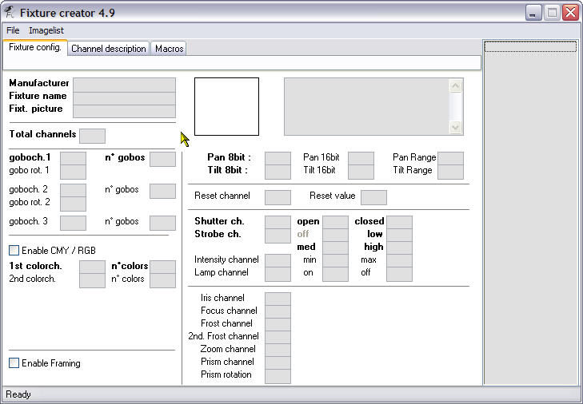
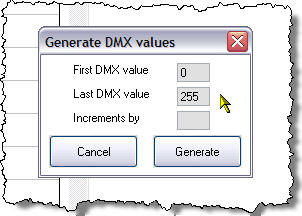

Table of Contents

Fixture Creator Tutorial - LED Bars
NOTE:
This tutorial is relative old and instead of deleting it then it will remain on the wiki so methods or issues which are not covered in other tutorials still will be available.
However new feature as “Segments” has made it possible to create a fixture like this in an easier way
Fixture Creator – LED / Segment Tutorial.
Work in Progress - Onge
This tutorial is the second part in a series I am proposing to do on the Fixture Creator in FreeStyler. I intend to do a tutorial for each type of profile available when you first start the Fixture Creator. They will be “Parcan, dimmer,…”, “Fogger-Hazer”, “Scan/Movinghd.” and “Other”. This tutorial is for a LED Bar, which will be created under the “Other” profile type.
This is quite an advanced tutorial as the fixture has multiple modes each with differing number of channels.
This tutorial is for the American DJ Mega Bar LED but the principals can be used for similar LED Bars or multiple RGB element LED fixtures
The reason I have chosen this fixture is twofold,
- A member on the FreeStyler Support Forum has made a request for the fixture.
- I needed a fixture to be able to show how to create this type of fixture in this tutorial.
Multi RGB element fixtures (LED Bars) along with lasers seem to give the majority of people real problems when trying to create a fixture for them. I am not going to talk about lasers in this tutorial only multi RGB element fixtures and specifically the American DJ Mega Bar LED.
The main reason I see for this problem is because they can have a lot of channels, have lots of different operating mode with differing number of channels per mode and when in the higher channel modes a lot of RGB elements, and you cannot find where to place certain channels.
Another reason is that the current Fixture Creator only supports 1 RGB element so creating a fixture with multiple RGB elements would be a real problem.
Hopefully with this tutorial I can show you my way of creating these type of fixtures.
I am not saying this is the best or the easiest way but it is a way that works and hopefully you will understand how it works.
I will include in this tutorial, the finished fixture(s), the fixture manual pdf and the complete tutorial as a pdf so you can all follow along easily.
Disclaimer:-
I do not physically have this fixture so it is untested, it may not cover every aspect of the fixtures capabilities but hopefully it will cover the most used. If it does not cover what you want then you can have a look at the fixtures in Fixture Creator and try and add that functionality yourself.
This tutorial does not show you how to create the fixture for use in 3D Magic Easy View, to do that you need to run the ScanLibrary program, it is not the same as Fixture Creator but the same method would need to be performed as shown for the Fixture Creator. In the future I will create a tutorial(s) for the ScanLibrary program as well.
American DJ Mega Bar LED
The American DJ Mega Bar LED specification and a link to download the manual can be found from the following link.
American DJ Mega BAr LED - Info
The American DJ Mega Bar LED has 6 DMX controlled modes of operation with channels of 2, 3, 4, 6, 7 and 11. I will start with the easiest of these modes and it is not the 2 channel mode but the 3 channel mode, all will be revealed
3 Channel American DJ Mega Bar LED
Start Fixture Creator and you should see the following.
Click the “Other” button as shown by the mouse pointer above.
You now are in the Fixture Creator program and on the main part of the program the “Fixture config” tab as can be seen in the image below.

So our first task is to fill in the Manufacturer and Fixture name.
I would always recommend putting in the proper manufacturer name such as “American DJ” rather than a shortened version such as “ADJ”.
If you are creating “custom” fixtures you could always call the manufacturer a unique name that means something to you. As an example I would call the manufacturer “AndreCustom” or something similar.
So put American DJ in the Manufacturer input field.
Name, as we are going to create a few differing versions of this fixture we need to ensure that they are unique and meaningful.
For the fixture we are creating now I think we can call it Mega Bar LED 3ch so enter that in the Fixture name input field.
Click into the Fixt. picture input field and a list of pictures will appear on the right hand side scroll down and click on mega-bar-led_small.gif in that list and it will appear to the right of the Manufacturer and the Fixture name, also the Fixt. picture field will be filled in with the name. This image might not be in your list if you have not imported the fixture, but I was just trying to explain how to do it.
I am also going to put something in the comment field.
See the next image to see this part completed.
I have only used a part of the image for the Mega Bar LED as it makes it easier here and in FreeStyler.
As you can see I have filled in some basic comments in the comment field as well, this is optional but would recommend use it to put anything you want people to know about this fixture.
Lets carry on, as I mentioned we are doing what I call the simplest fixture for all the modes that the Mega Bar LED has and this is the 3 channel fixture.
Yep you guessed it we need to enter 3 in the Total channels input box as can be seen in the image below.
OK so now our fixture knows how many channels, so how do we tell it what channels control what?
As we know this is and RGB fixture and RGB stands for Red, Green and Blue. They are colours. So let us find the colour section of the Fixture Creator.
Here it is, notice that it has a tick box to Enable CMY / RGB well our fixture is RGB so we better enable it by ticking that box.
Wow, ticking that box has shown some hidden fields. Look to the right of the tick box we have just ticked and you can see another tick box and it is labelled RGB values lets tick that and see what happens.
As you can see the fields have now changed to Red Channel, Green Channel and Blue Channel which is what our fixture is. As this fixture is 3 channel and the manual tells us that the red is on 1 and green is on 2 on blue is on 3 we need to put those numbers in those fields. See image below for how it looks completed.
That is it we have entered all the data we need for this fixture. No we need to save it and export it. I always export any fixture I create and keep them separate from FreeStyler to ensure that I always can re-install them if I ever need to do a complete/clean re-install of FreeStyler.
Go to the File menu and select Save and you will get the following save dialogue.
The default name of Mega Bar LED 3ch.fxt will be the file name, taken from the Fixture name we entered at the beginning of this tutorial.
I always add the manufacturers name to the front of this as can be seen in the above image. The reason I do this is to make it easier to identify when I am using Windows Explorer in the FreeStyler/Fixtures folder. You do not have to do this.
Click the Save button and that is done.
Now to export our fixture.
Exported fixtures are the ones you would upload to the FreeStyler Support Forum or transfer onto another computer for FreeStyler to use. It contains all the information needed in the one file, images, gobos, colours etc.
Go to the File menu and select Export as shown in the image below.

You will be presented with another save dialogue as shown below. I have already navigated to a folder that I created called “FreeStyler Exports”, this folder is located in “My Documents” folder and not inside the “FreeStyler” folder. Keep them seperate. Even when I download fixture from the forum, I export them to this folder, to keep them safe and have them avaialble again when I do a fresh install of FreeStyler.
The filename has the same filename as what was entered for the normal save, so you can just press the Save button and that is our fixture exported and you can now exit from the Fixture Creator program and start FreeStyler and add the number of these 3 channel fixtures you want to control.
4 Channel American DJ Mega Bar LED
This fixture is created exactly the same way as the 3 channel fixture but has a overall dimmer attached to it.
Let us get started.
Open Fixture Creator and fill in all the information as per the 3 channel fixture described above.
Obviously the Fixture name will be Mega Bar LED 4ch and any comments need to be changed as well and the Total channels will have to be changed to 4.
It should look like this.
Now all we need to do is add the Dimmer channel to this information.
In FreeStyler it is called the Intensity channel and can be found near enough slap bang in the middle of the Fixture Creator on the “Fixture config.” tab.
Our dimmer is on channel 4 so we would enter the number 4 in the input box to the right of the Intensity channel text and the manual states that the dimmer has values of 0 to 255 they need to be entered in the min and max fields respectively.
It should look like the following image.
That is it done.
Now save the fixture as instructed before.
Caution if you opened up the 3 channel version of this fixture to work on then do a Save As and adjust the filename accordingly otherwise you will overwrite the existing 3 channel fixture.
Export it as instructed before.
You can close the Fixture Creator program and start FreeStyler and add you fixtures.
11 Channel American DJ Mega Bar LED
We are now going to create the 11 channel version of the American DJ Mega Bar LED, so how are we going to do this as the Fixture Creator only allows 1 RGB element and the American DJ Mega Bar LED has 3 of these RGB elements.
Well the simple answer is you cannot do it but what would be the point of this tutorial if you cannot do it.
What you have to do is to not think of it as one fixture but in this case as 4 fixtures, 3 fixtures for the RGB elements and 1 fixture for the control part (strobe and dimmer).
Now strangely enough did we not create a 3 channel RGB fixture in the first part of this tutorial? Yes we did, so now all we have to do is create the control part of this fixture the bit that controls the strobe and the dimmer. It should be easy enough.
Start the Fixture Creator program and click the “Other” button as you did in the previous tutorials.
I have filled out all the information for this part of the fixture as can be seen in the image above. Remember this part of the fixture is only for controlling the strobe and dimmer. You might be asking why I have set the channel values of the strobe and dimmer (intensity) to 1 and 2 respectively as this is meant to be an 11 channel fixture. Well this part of the fixture only has 2 channels so it has to be set at 1 and 2. The correct addressing of the channels comes when we patch them into FreeStyler. Enter the data as shown above and Save and Export the fixture as before.
Close the Fixture Creator Program.
Patching the 11 Channel American DJ Mega Bar LED
Please note - I was using a beta version for these screen shots, so the addressing of the fixtures looks screwed up and slightly different to what you will see if you are using FreeStyler 3.2.8. It will work as described and your addressing will be correct if using teh auto-address feature.
Start FreeStyler.
Go to Setup and select Add/Remove fixtures.
Open the American DJ folder in the panel to the left and click the MEGA BAR LED 3CH fixture and then click the Add fixture button as shown.
Now remember for 11 channel mode of the American DJ Mega Bar LED fixture we have 3 x RGB elements per 1 real fixture so we set the number of fixtures to add to 3 and then press the Add button.
We now need to patch the control channels for this 1 real fixture so select the MEGA BAR LED 11CH fixture in the panel on the left and press the Add fixture button as before.
As we only need 1 control fixture per real fixture we change the number of fixtures to add to 1 and then press the Add button.
As you can see from the image above I have gone ahead and patched fixtures to allow for 4 x real fixtures. Notice the pattern of 3xRGB fixture and then 1xControl fixture.
Close the Add/Remove fixture panel by clicking the Close button.
Back on the FreeStyler main layout you should have something like this if you have followed along.
I would recommend going to Edit and Move fixtures and arrange them like the following layout.
This now is laid out as the four fixtures with the control channel below the RGB elements. Notice that the control element has the dimmer %age vale on it so it makes it easier to identify. You could also go back into the Add/Remove fixture panel and rename them to make it even easier.
Maybe name them like “Bar1-1”, “Bar1-2”, “Bar1-3”, “Bar1-4” and “Bar1 Ctrl” etc.
Now you have full control of you Mega Bar LEDs in 11 channel mode. As said right at the top it may not be the easiest way or the best way but it does work.
2 Channel American DJ Mega Bar LED
OK, the 2 channel version of this fixture could be done, in my mind, in two ways:-
- Macros for channel 1 (Macros/Programs) and using one of the functions below the “Lamp channel” such as “Iris” to give you a slider control for channel 2 (Speed/Sound Sensitivity) when you pop out the control panels.
- Colour wheel for channel 1 and using one of the functions below the “Lamp channel” such as “Iris” to give you a slider control for channel 2 (Speed/Sound Sensitivity) when you pop out the control panels.
Both are as good as each other, but I am going to using option 2 just to show that you can use “labelled” things for other things other than what it says.
Along these lines it is something I have mentioned that we would like to be able to change these “fixed” labels and also the control panel being used should display its new label so you definitely identify the control. For example in the above we are going to use the “Iris” channel to get the slider, now the panel has a picture of an Iris on it panel and even if I change the channel description to “SpeedSound” it does not appear on the panel. So you will have to remember what it is for.
Anyway I digress, let us get on and create this 2 channel fixture.
Open Fixture Creator and click the “Other” button as before in this tutorial and fill in the Manufacturer, Fixture name, get the picture and add comments as instructed before. Put 2 in the Total Channels field. See image below for this part completed.
As I said we are going to use the colour wheel to be the control method for the Macros/Programs on channel 1. Count up how many Macros/Programs there for this channel, look for things like “rainbow”, “speed”, “rotation” and other things where you might want to add more than 1 control per each of these, for example “rainbow” might have values from 128 to 255 and it is the speed of the “rainbow” from slow to fast, so you might want to make that 3 control for that i.e. 1 for slow, 1 for medium and 1 for fast. For this fixture there is nothing like that so we can just count up the number of Macros/Programs in the list. I make it 18.
Let us put that info into the right places on the Fixture Creator “Fixture config.” tab.
As you can see I have put channel 1 in the 1st colorch. field and the number or Macros/Programs 18 in the n°colors. I have also put channel 2 in the Iris field.
Right we now need to enter the values for the Macros/Programs into the colour wheel part of Fixture Creator. Click the 1st colorwheel tab and you get the following screen.
Now this screen has the correct number rows for the number of Macros/Programs that we told it we had when we filled in the n°colors on the “Fixture config.” tab.
Now we have to enter all the values from channel 1 of the manual for the 2 channel fixture, phew that is going to take a bit of time. Luckily in a recent version there was added an Auto generate values option which can fill out this information for us.
Click Options and then Auto generate values and you should see the following dialogue box appear.

The aim is to try and get each value generated to be in the middle of each of the values allowed for each Macro/Program. Now this is the first time I have actually used this dialogue so I had a little play around before I settled on the values I used.
The values I used are shown in the dialogue below.
Enter the numbers shown and press the “Generate” button and as if by magic, Raph’s clever programming, the DMX values have all been filled in.
Now you have seen what is does have a play with the numbers so you get an idea of what it is doing. When you have had enough excitement put the number I used back in.
This is what the top half of the list looks like after it has been filled in.
I am a bit of a fuss pot over certain things and I like my “off”s to be at zero, assuming off can be zero, so I would change the first row 7 to a 0.
Next to the numbers are a couple of spaces, these contain an icon and the icon name respectively. So now we have to do is find a relevant icon from the list to right for each of these rows. The first one is easy. Click on the top line (lowest DMX Value) and then scroll down the list on the right until you find off.bmp and click it. Notice how the picture and the name appear in the columns next to the DMX Value. Repeat this process choosing a different icon for each row.
As you can see from the two images above I have added all the icons for each of the values. I have used a generic “Macro” icon for the ones I could not find a relevant icon for, too lazy really. Please go ahead and change them for more suitable ones or even create your own bitmaps to represent them.
Right that is the fixture done.
We now save the fixture and export it, please see the earlier parts of the tutorial for information on how to do this.
Exit Fixture Creator and you can now start FreeStyler and patch your fixture into it and start using it.

Here you can see the “Iris” panel and the “Colours” panel open for the 2 channel American DJ Mega Bar LED.
Tip:- If you want to use “Blackout” on this fixture then the best way is to do the following
Here I have put channel 1 as the Shutter channel and have just entered the value for open as 1, it will still be off, and closed as 0, which is off.
This will enable you to press the “Blackout” button and the lamp will turn off.
This has been done with the fixture I have uploaded.
7 Channel American DJ Mega Bar LED
We are now going to do the 7 Channel version of the American DJ Mega Bar LED. Start Fixture Creator.
Select “Open existing profile”.
In the “Open” dialogue, find and double click the “American DJ” folder.
Select the “MEGA BAR LED 2CH” fixture and then click the “Open” button.
The reason I am starting with this fixture is because it has the same Macros/Program as what we need just on a different channel.
So this is what you will get when we have opened up the 2 channel fixture.
All we have to do is change some of the information and create some new information.
Information that needs to be changed is  \
\
- Fixture name
- Total channels
- Comment
- Shutter ch.
- Iris (Speed/Sound Sensitivity)
Information that needs to be added:-
- Strobe
- Intensity (Dimmer)
- RGB
See next image for the completed information.
This is the “Fixture config.” tab completed for the 7 channel fixture. Please ensure you have changed/added everything that is shown above.
Click on the “Channel description” tab and make changes so it is the same as the image above.
We need to do nothing on the “1st colorwheel” tab (Macros/Programs)as it has not changed from when we created it for the 2 channel fixture all we did was change the channel it is now on and we did that on the “Fixture config.” tab.
No need to look at the “Macros” tab as nothing has been defined and none need to be defined.
You must do a “Save as” otherwise you could overwrite the 2 channel fixture.
Change the 2 in the “File name:” to a 7 as I have done in the above image, then click the “Save” button.
Now Export the fixture.
The file name should be OK as we have just saved it and it should be using that name, so just click the “Save” button.
That is it, the 7 channel fixture all completed. You can exit from the Fixture Creator and start FreeStyler and patch your new fixture.
Downloads
Below are the fixtures created in this tutorial.
american_dj_mega_bar_led_2ch.pff
american_dj_mega_bar_led_3ch.pff
american_dj_mega_bar_led_4ch.pff
american_dj_mega_bar_led_7ch.pff
american_dj_mega_bar_led_11ch.pff
Below are PDF files of this completed tutorial and the manual for the fixture.
Fixture Creator Tutorial - LED Bars
American DJ Mega Bar LED - Manual
Below is the image used in the tutorial for the fixture. Right click it and select “Save Image As” or “Save Picture As”. Put it in the FreeStyler/Fixtures folder.
End Bit
I will add to this tutorial at a later date to add the 6 channel mode fixture.
For the 11 channel fixture you could create 3 seperate RGB fixtures and name them with “left”, “centre” and “right” in the name and then using a picture program cut out the left, centre and right parts of the fixture and then use them in fixture creator as needed.
I hope it has given an insight into how to create multi element RGB fixtures and how to patch them for use in FreeStyler.
If you notice any errors in this tutorial then let me know. I appreciate all comments good or bad but please make them constructive don’t just say “its crap” or “I don’t understand”, explain why and I will try and fix it as best as I can.